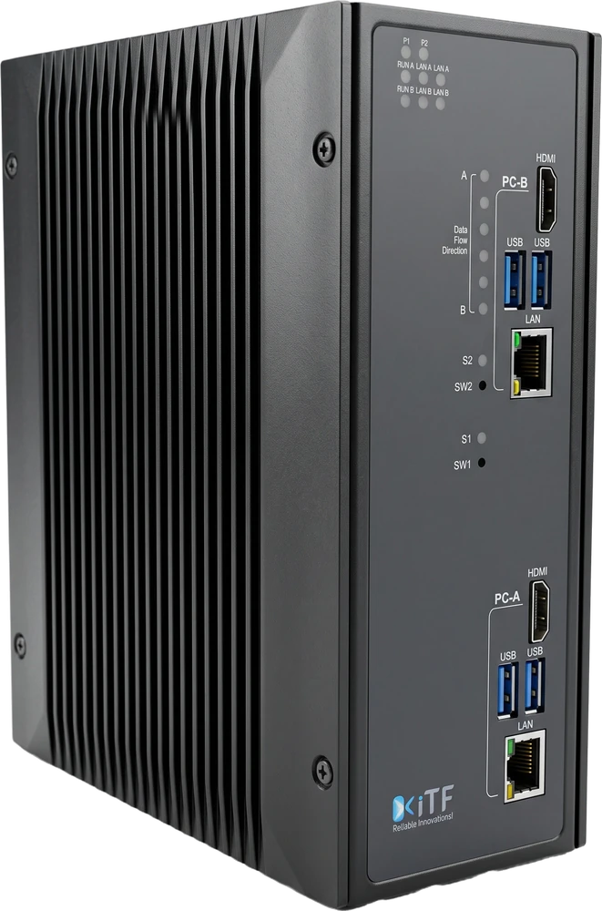
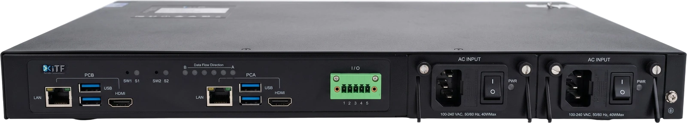
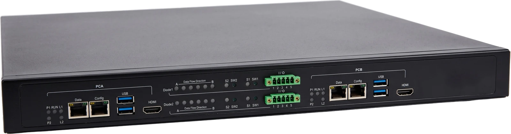

Products
Four FPGA-based gateways
Three one-way models and one controlled two-way gateway. Sized for the cabinet, the rack or the product it goes inside.
Gateways
Three one-way models and one controlled two-way gateway

UnidirectionalTFG-121
Fan-less DIN-rail gateway. Rugged security at the point where data is generated.
- Throughput
- 1-10 Gbps
- Form factor
- DIN-rail, fan-less
- Data flow
- One-way, protocol-level

UnidirectionalTFG-1URP
1U rack-mount gateway and scalable core infrastructure for the plant and site boundary.
- Throughput
- 1-10 Gbps
- Form factor
- 1U rack mount
- Data flow
- One-way, protocol-level
 Unidirectional
UnidirectionalTFG121-BF
Files up to 10 GB. The TFG121-BF handles larger files, up to its SSD capacity.
- Throughput
- 1-10 Gbps
- Form factor
- 1U rack mount
- Data flow
- One-way, protocol-level

Controlled bidirectionalTFG121-BSG
A controlled two-way gateway, not a diode. Sessions start only from the side you choose.
- Throughput
- 1-10 Gbps
- Form factor
- 1U rack
- Data flow
- Controlled two-way, port-level
Tell us where your boundary sits
Say what has to cross it. We will help you choose the right device and plan a pilot.